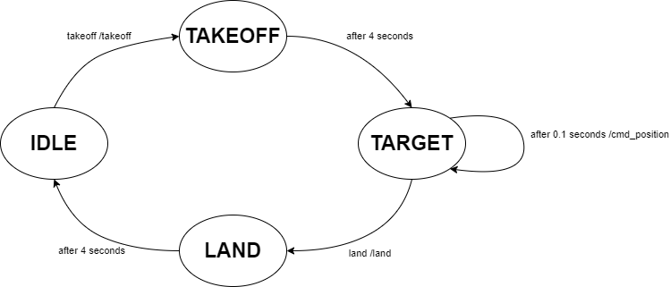

crazyflies-Package
Crazyflie and Safeflie
The Crazyflie and Safeflie classes are examples of how to use the underlying interface to control a Crazyflie, they use the crazyflie interfaces package to do so. It is the easiest way to start implementing your own logic. A Crazyflie/Safeflie will automatically call the gateway to establish a Crazyflie connection.
If reduced functionality is required, it is recommended to use the Client classes to implement only parts of the communication on the application layer. This is especially important when using many Crazyflies to limit the number of ROS Topic connections.
The following class diagram shows the Crazyflie and Safeflie classes and how the user can interact with them.
Note
The ds-crazyflies repository tries to provide a universal framework for crazyflies. For a more detailed but therefore also more use-case specific example on how to use ds-crazyflies also check out the Pad Swarming repository. The repository allows to fly up to 50 Crazyflies equipped with QI-Charges.
Safeflie
A big problem of the high level commander inside the crazyflie is the limited supported update rate when sending go_to commands. These should ideally not be sent out with more than 1Hz. The Safeflie tries to mitigate this by using the high level commander only for takeoff and landing, while during flight the low level command cmd_position is used. This however has to be sent continously while flying and the transitions between the two command modes have to be handled carefully.
{kind=link}
The Safeflie allows to safely switch between the high level commander and the low level commander. It provides 3 topics:
safeflieID/takeoffsafeflieID/landsafeflieID/sendTarget
With takeoff and land the crazyflie can be started and stopped. During flight, targets can be sent using the sendTarget topic:
uint8 priority # priority of the target, lower priority is more important
geometry_msgs/Vector3 target # Target position
string base_frame # Base frame the target is relative to
string info # Additional information
Note
Only the target field is currently used. It describes the desired target in world coordinates.
Crazyflie class
- class crazyflies.crazyflie.Crazyflie(node, id, channel, initial_position, type)
Bases:
ConsoleClient,EmergencyClient,GenericCommanderClient,HighLevelCommanderClient,LoggingClient,RPYTCommanderClientRepresents a crazyflie.
Allows user to interchangeably use different crazyflie implementations (currently Webots or Real Hardware)
- Parameters:
node (rclpy.node.Node)
id (int)
channel (int)
initial_position (List[float])
type (CrazyflieType)
Safeflie class
- class crazyflies.safeflie.Safeflie(node, id, channel, initialPosition, type)
Bases:
Crazyflie- Parameters:
node (rclpy.node.Node)
id (int)
channel (int)
initialPosition (List[float])
type (CrazyflieType)

Note
Not shown in the diagram are the connections of the Crazyflie with the underlying software stack.